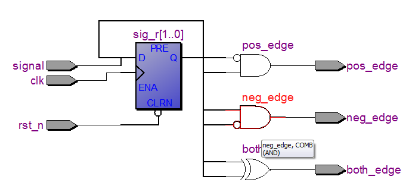
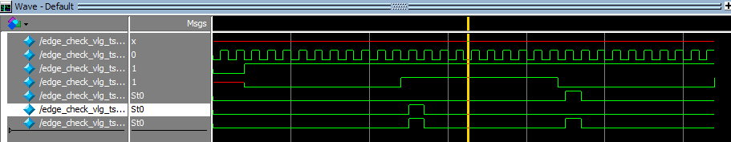
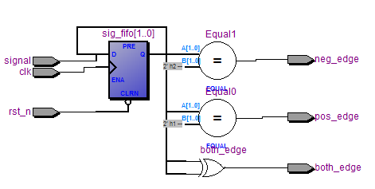

以前我曾一度傻乎乎的使用
always @ (posedge signal)这样的代码去检测signal的上升沿，闹出了很多问题。
当受实验室的一同学指教后，再也不会傻乎乎的这样干了。当然，你看完下文也不会这样干了。
检测上升沿的原理：使用高频的时钟对信号进行采样，因此要实现上升沿检测，时钟频率至少要在信号最高频率的2倍以上，否则就可能出现漏检测。具体请参见下面代码。
module edge_check(clk, rst_n, signal, pos_edge, neg_edge, both_edge);
input clk;
input rst_n;
input signal;
output pos_edge;
output neg_edge;
output both_edge;
reg sig_r0, sig_r1; // 状态寄存器
always @ (posedge clk or negedge rst_n)
if (!rst_n) begin
sig_r0 <= 1'b0;
sig_r1 <= 1'b0;
end else begin
sig_r0 <= signal;
sig_r1 <= sig_r0;
end
assign pos_edge = (~sig_r1) & (sig_r0);
assign neg_edge = sig_r1 & (~sig_r0);
assign both_edge = sig_r1 ^ sig_r0; // 双边沿检测，或pos_edge|neg_edge
endmodule使用Quartus II综合布线之后的RTL视图如下：

从RTL视图中可以看出，电路是通过一个异步复位的D触发器实现的。
ModelSim的仿真视图如下，从中可看出已检测出上升和下降沿，但存在一个延时，这是因为使用了时钟同步的检测。

或者上面的Verilog代码还可以换一种写法，效率上差不了太多；
module edge_check(clk, rst_n, signal, pos_edge, neg_edge, both_edge);
input clk;
input rst_n;
input signal;
output pos_edge;
output neg_edge;
output both_edge;
reg [1:0]sig_fifo;
always @ (posedge clk or negedge rst_n)
if (!rst_n) begin
sig_fifo <= 2'b0;
end else begin
sig_fifo <= {sig_fifo[0], signal};
end
assign pos_edge = (sig_fifo == 2'b01);
assign neg_edge = (sig_fifo == 2'b10);
assign both_edge = sig_fifo[0] ^ sig_fifo[1]; // 双边沿检测，或pos_edge|neg_edge
endmodule生成的RTL视图为
